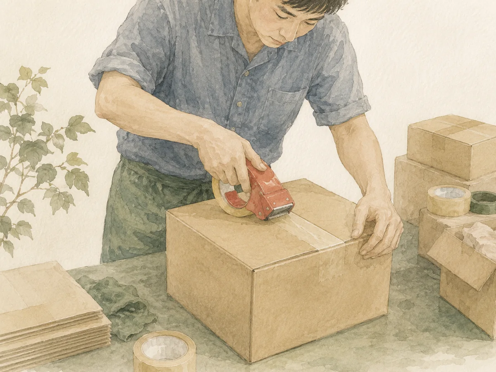

민화·문화 굿즈
한 획씩 완성해가는 민화 작업
밑그림과 채색을 거쳐 작품을 완성하고, 문화 굿즈로 이어가는 작업 과정을 소개합니다.
민화 작업 보기태장에서는 근로자가 자신의 속도로 일을 익힙니다. 작업을 작은 단계로 나누고, 필요한 도구와 자재를 가까이에 둡니다. 담당자는 작업 순서와 안전수칙을 안내하고, 진행 과정과 결과를 함께 확인합니다.
일터 이야기 보기
포장 작업은 자재를 준비하는 일에서 시작해, 완성된 포장 상태를 확인하는 일로 이어집니다.
상자와 테이프 등 필요한 자재와 도구를 작업대 가까이에 정리하고, 이동에 방해되는 것이 있는지 살핍니다.
작업을 작은 단계로 나누어 안내합니다. 근로자마다 익숙한 방식과 속도를 고려해 순서를 함께 확인합니다.
정해진 순서에 따라 물품을 상자에 담고 포장합니다. 필요한 부분은 현장 담당자의 도움을 받아 진행합니다.
표기 내용과 수량, 포장 상태를 다시 살핍니다. 담당자가 진행 과정과 결과를 함께 확인합니다.
